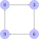

The undirected graph we saw at the beginning of the previous unit is disconnected, and the same goes for any directed version of it. For example, there is no edge between \(1\) and \(3\), one simply cannot be reached from the other.

However, we can identify parts of the graph that are connected.
Even though there is no edge between \(0\) and \(6\), the transitive closure of the edge relation does connect the two.
Now let us look at a directed graph, where multiple degrees of connectedness need to be distinguished.

The directed graph above is strongly connected. When we take the reflexive, transitive closure of the edge relation, every node is reachable from every node. This is exactly what it means to be strongly connected.
But a slight change in the edge relation suffices to reduce strong connectedness to connectedness.

Even if we look at the reflexive, transitive closure of the edge relation, there is no path from \(3\) to \(0\), from \(6\) to \(0\), or from \(9\) to \(0\). So we can no longer reach every node from every node. But for any two nodes \(a\) and \(b\), it still holds that \(a\) can be reached from \(b\) or \(b\) can be reached from \(a\). Hence the reflexive, transitive closure of the edge relation is still total, and we have a connected graph.
Finally, consider what happens if we remove one edge from the graph above.

Now even the reflexive, transitive closure of the edge relation does not connect \(6\) and \(9\), so the graph cannot be connected. However, \(6\) and \(9\) are still reachable from each other if we consider the reflexive, symmetric, transitive closure of the edge relation. Therefore, the graph is weakly connected.